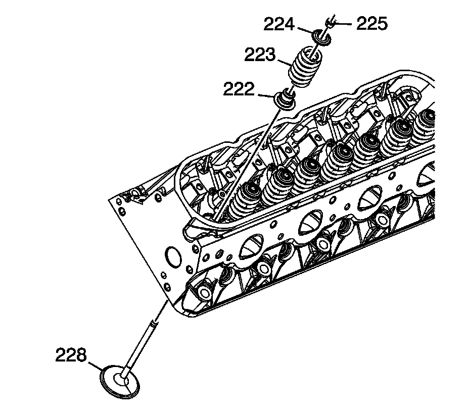
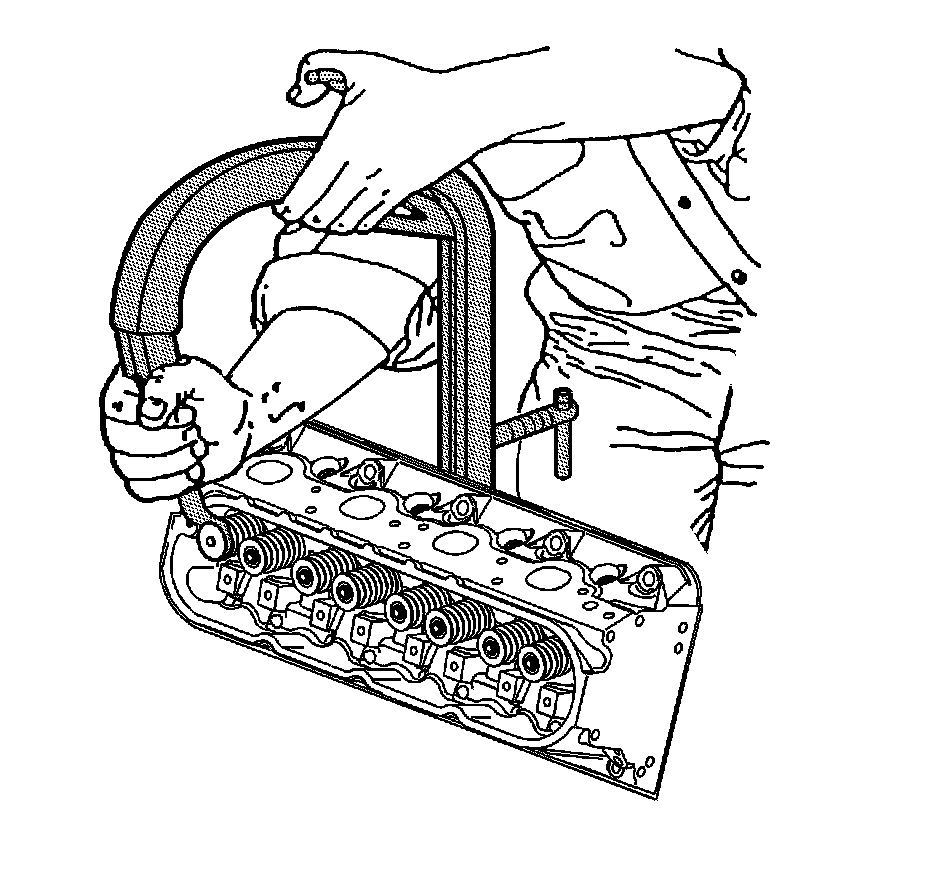
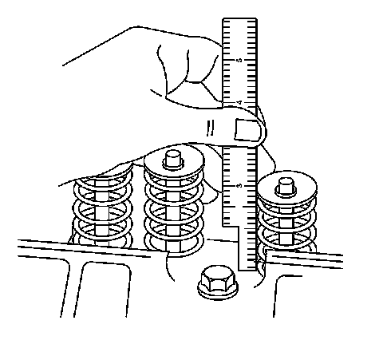
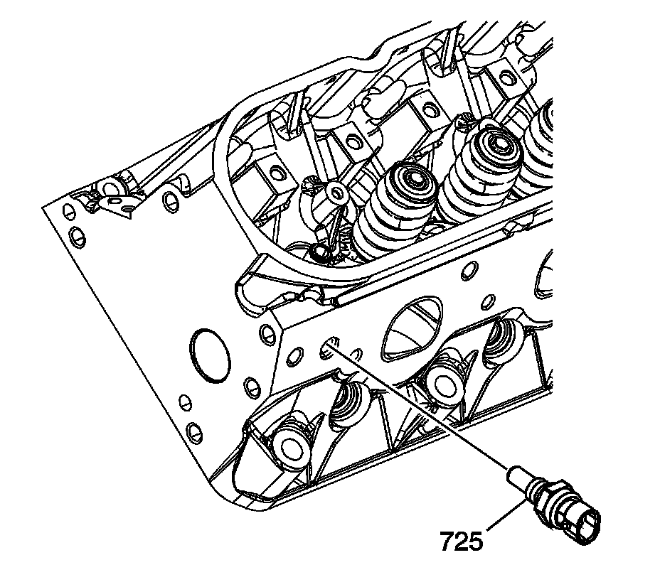
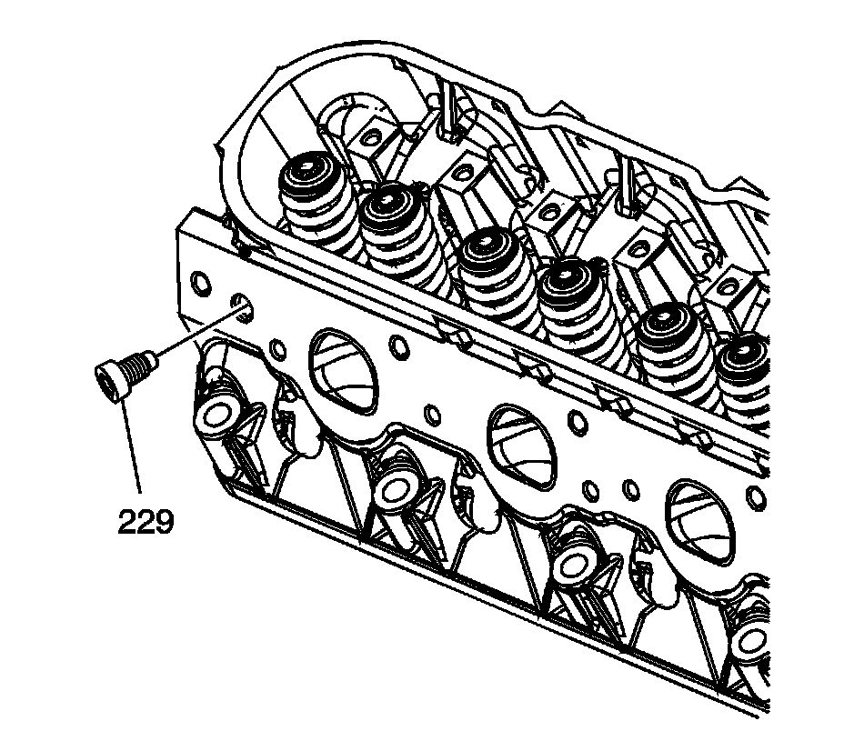
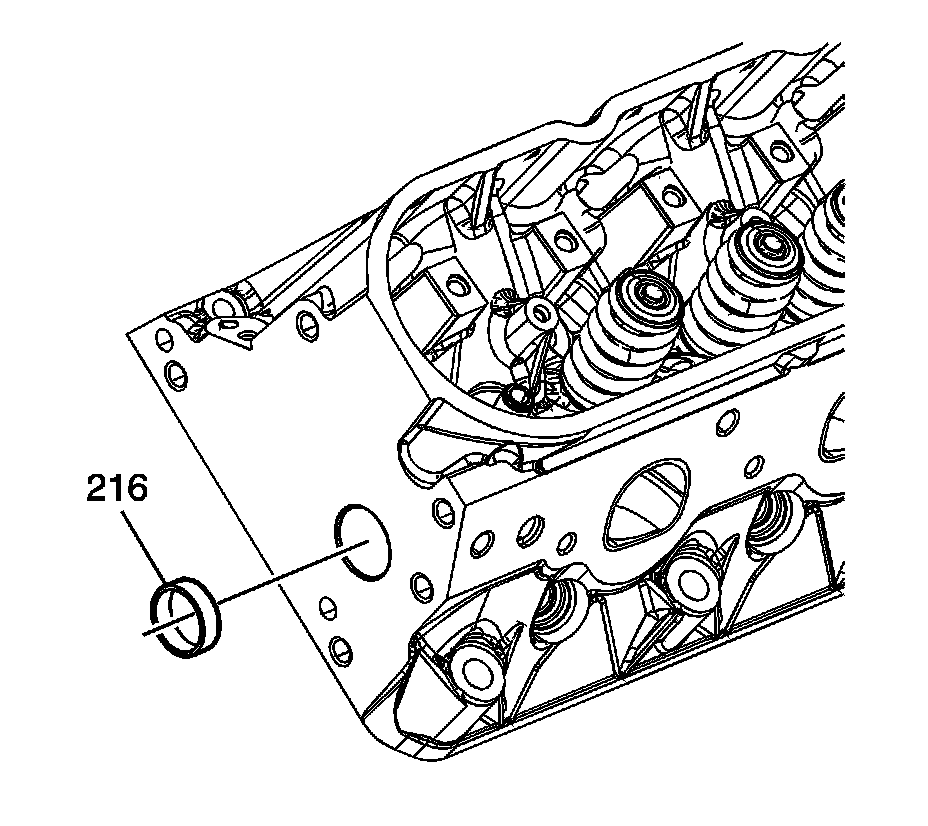

52. Cylinder Head Assemble
Cylinder Head Assemble
Tools Required
J 8062 Valve Spring Compressor - Head Off

1. Clean the cylinder head valve spring shim area.
Important: When using the valves and related components again, install the parts to their original location.
2. Install the valves (228) into the proper port. Refer to Separating Parts.
3. Install the valve stem oil seal (222).
4. Install the valve spring (223).
5. Install the valve spring cap (224).

6. Using the J 8062, compress the valve spring.
7. Install the valve stem keys.
1. Use grease in order to hold the keys in place and remove the J 8062.
2. Ensure the keys seat properly in the groove of the valve stem.
3. Tap the end of the valve stem with a plastic face hammer to seat the keys, if necessary.

8. Using a ruler, measure the valve spring installed height.
Measure from the base of the valve spring to the top of the valve spring.
^ If the installed height exceeds 46.25 mm (1.82 in), install a valve spring shim of approximately 0.5 mm (0.02 in) thick.
^ Do not shim the valve spring to obtain less than the specified height.
Do not assemble the components without a spring shim on the cylinder head.
9. Install the remaining valves, springs, and other components.

10. Install sealant GM P/N 12346004 (Canadian P/N 10953480), or equivalent, to the threads of the coolant temperature sensor (725).
Notice: Refer to Fastener Notice.
11. Install the coolant temperature sensor into the left cylinder head.
Tighten the coolant temperature sensor to 20 N.m (15 lb ft).

12. Install sealant GM P/N 12346004 (Canadian P/N 10953480), or equivalent, to the threads of the cylinder head plug (229).
13. Install the cylinder head plug to the right cylinder head.
Tighten the cylinder head plug to 20 N.m (15 lb ft).

14. Apply threadlock GM P/N 12345382 (Canadian P/N 10953489), or equivalent, to the sides of the cylinder head plugs (216).
15. Install the cylinder head plugs into the cylinder head.
A properly installed plug should be installed 2.5 mm (0.1 in) below the end face of the head.